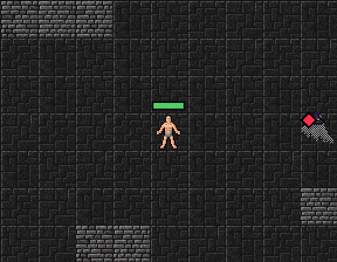
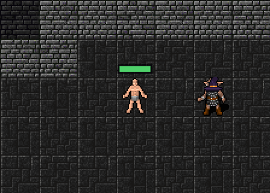
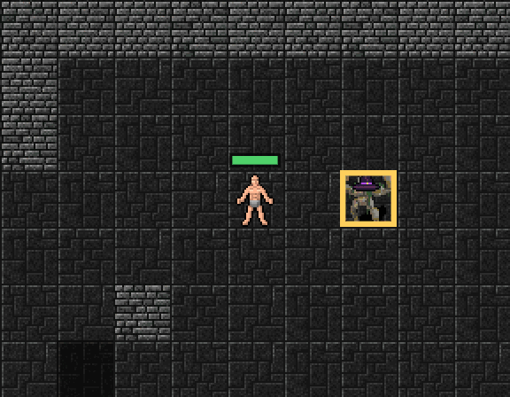
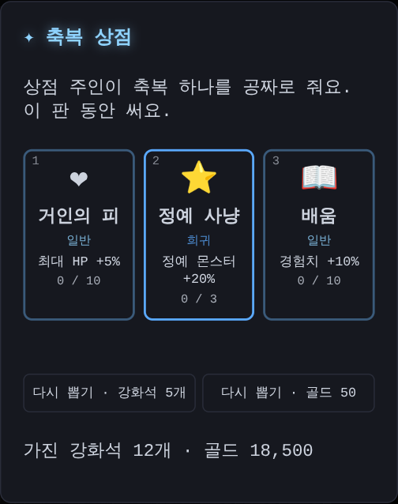
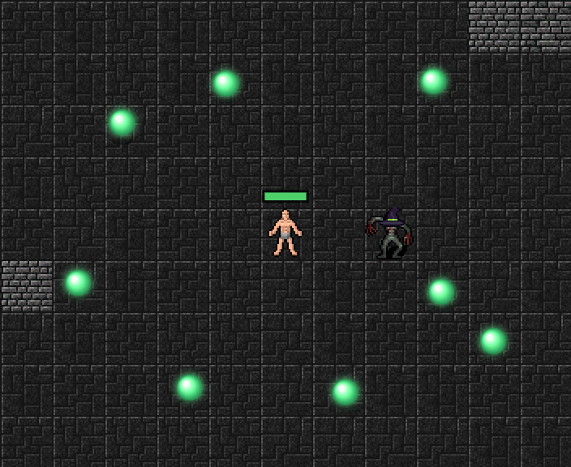
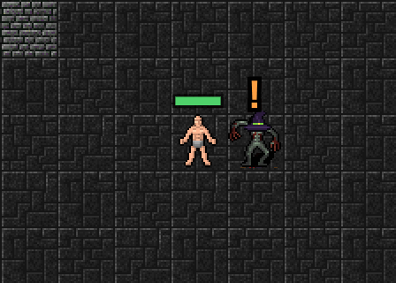
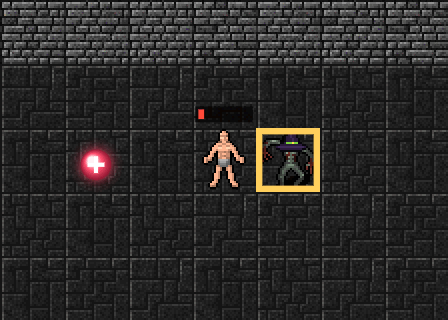
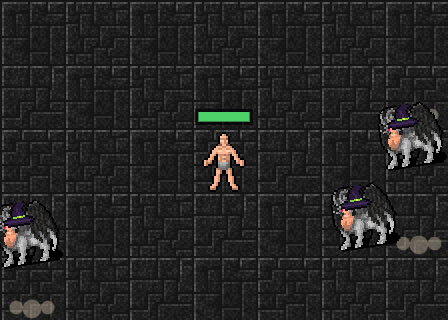

저주 구슬은 한 칸만, 경험치 구슬과 축복 상점, 강타와 버티기
어제 20층부터 멀리서 저주 구슬을 던지는 원거리 몬스터를 넣었어요. 던지기 전에 내 자리 둘레 3×3칸을 붉게 칠하고 두 턴을 기다려 줬어요.
9칸은 거의 못 피했어요
직접 해 보니 9칸은 너무 넓었어요. 가운데에서 빠져나가려면 두 턴 동안 두 칸을 걸어야 하는데, 광장에서는 몬스터들이 몰려와 길을 막고 있어요. 붉은 표시를 보고도 거의 다 맞았어요.
이제 한 칸만
그래서 저주 구슬은 조준한 순간 내가 서 있던 한 칸에만 떨어지게 바꿨어요. 붉은 표시도 그 한 칸뿐이고, 모서리에 남은 턴(2 → 1)이 보이는 건 같아요. 방향키로 한 칸만 비켜도 구슬이 빈 바닥에 떨어져요. 3D 화면도 바닥 한 칸이 붉게 물들고 1.5초쯤 여유가 있어요.

한 방의 세기는 그대로라서, 붉은 칸을 못 보고 서 있으면 여전히 아파요. 대신 보기만 하면 피할 수 있어요.
시뮬레이션으로 보면 헬은 조금 쉬워지고 일반·나이트메어는 거의 그대로예요. 피하는 재미가 더 중요해서 이대로 지켜볼게요.
경험치는 주워야 올라요
이제 몬스터를 쓰러뜨리면 경험치가 바로 오르지 않아요. 쓰러진 자리에 초록색 경험치 구슬이 떨어지고, 한 칸 안으로 다가가면 저절로 주워져요. 붙어서 싸운 몬스터는 거의 바로 주워지지만, 마력탄이나 속성 스킬로 멀리서 잡은 몬스터는 걸어가서 주워야 해요. 싸움이 끝나고 광장을 한 바퀴 돌며 구슬을 줍는 재미가 생겼어요. 줍지 않고 계단을 내려가면 구슬은 사라지니 조심하세요.

처음에는 몬스터 한 마리에 구슬이 하나였는데, 경험치를 "먹는" 느낌이 약했어요. 그래서 경험치가 많을수록 구슬이 여러 개로 나뉘어 사방으로 튀게 했어요. 낮은 층 몬스터는 구슬 하나지만, 깊은 층 몬스터는 서너 개, 정예 몬스터는 일고여덟 개를 둘레에 흩뿌려요. 그 사이를 걸어 다니며 구슬을 쓸어 담는 맛이 있어요.

레벨은 천천히
구슬을 주워 보니 레벨이 너무 금방 올랐어요. 그래서 레벨마다 필요한 경험치를 4배로 늘렸어요. 처음 레벨 2까지 경험치 24가 필요해요. 이미 하던 판도 다음에 불러올 때 남은 경험치가 4배가 돼요. 레벨이 천천히 오르는 만큼 레벨 업 축복도 줄어서, 끝까지 가기가 조금 더 어려워졌어요.
상점은 축복 상점으로
보스 층 바로 전 층의 상점은 늘 시작 자리 바로 옆에 있었고, 장비는 자동으로 끼워지니 들를 일이 별로 없었어요. 그래서 이제 축복 상점이 돼요. 광장 어딘가에 숨어 있고, 찾아가 밟으면 축복 하나를 공짜로 골라요. 받고 나면 상점은 사라져요.

쓰지 않는 장비는 모두 분해
전에는 레전더리·세트·유니크 장비는 거래소에 팔 수 있게 가방에 남겼어요. 거래소가 쉬고 있으니 가방만 차서, 이제 끼지 않는 장비는 등급과 상관없이 모두 분해해서 강화석과 골드로 바꿔요.
휴대폰은 누른 자리가 스틱
휴대폰에서는 내 캐릭터가 스틱 가운데여서, 캐릭터가 화면 아래쪽에 있으면 손가락을 옮기기 불편했어요. 이제 화면 아무 곳이나 누른 자리가 스틱 가운데예요. 누른 자리에 동그란 고리가 나타나고, 거기서 위·아래·왼쪽·오른쪽으로 끌면 그쪽으로 계속 걸어요. 손가락을 가운데로 되돌리면 멈추고, 톡 누르면 회피예요.
시뮬레이션으로 보면 축복 상점에서 받는 축복과 못 줍는 경험치가 서로 비슷해서 난이도는 그대로예요.
속성 스킬은 조금 좁게
몬스터가 몰려드는 광장에서 화염구와 얼음 폭발이 너무 넓게 쓸어 버렸어요. 그래서 범위에 상한을 뒀어요. 화염구와 얼음 폭발은 Lv 7까지 둘레 1칸(3×3)이고, Lv 8이 되어야 2칸(5×5)으로 넓어져요. 예전처럼 7×7까지 커지지는 않아요. 연쇄 번개도 최대 6번만 튕겨요. 대신 단계가 오를 때마다 피해는 그대로 세져요.
살펴보다가 버그도 하나 찾았어요. 속성 축복을 Lv 6 이상 골라도 실제로는 Lv 5 효과만 들어가고 있었어요. 이제 카드에 적힌 대로 Lv 10까지 들어가요.
시뮬레이션으로 보니 몬스터에게 들어가는 피해의 약 70%가 속성 스킬이었어요. 속성 스킬 없이 기본 공격만으로는 끝까지 갈 수 없을 만큼 게임이 속성 스킬 중심으로 맞춰져 있어요. 범위를 줄인 만큼 몬스터를 조금 약하게 해서, 끝까지 가는 비율은 예전과 비슷하게(일반 약 70%) 맞췄어요.
계단이 열리면 경험치 구슬이 모두 날아와요
경험치 구슬을 줍느라 광장을 한참 도는 건 마지막에는 조금 귀찮았어요. 그래서 이제 마지막 몬스터를 쓰러뜨려 계단이 열리는 순간, 맵에 남은 경험치 구슬이 모두 나에게 날아와요. 장비·골드·보물은 그대로 바닥에 남으니 필요한 건 직접 주우세요.

걸으면서 회피하기
휴대폰으로 해 보니, 한 손가락으로 걷다가 다른 손가락으로 톡 눌러 회피하면 걸음이 멈췄어요. 웹이라서 어쩔 수 없는 것은 아니었어요. 브라우저는 손가락을 하나하나 따로 알려 주는데, 게임이 손가락을 하나만 기억하고 있었어요. 그래서 두 번째 손가락이 스틱을 빼앗아 가 버렸어요.
이제 걷는 손가락은 그대로 두고, 다른 손가락의 짧은 톡만 회피로 읽어요. 걸으면서 톡 → 굴러서 피한 뒤 그대로 계속 걸어요. 2D, 3D, 마을 모두 같아요.
너무 쉬워서 긴장감이 없었어요
해 보니 20층 전까지는 몬스터에게 맞아도 거의 아프지 않았어요. 그러다 40층이 넘으면 갑자기 벽처럼 막혀요. 그렇다고 몬스터를 그냥 세게 만들면, 이번에는 너무 금방 쓰러져서 짜증이 나요.
숫자로도 확인했어요. 시뮬레이션에서 일반 던전 1~30층은 몬스터 한 대가 최대 HP의 3~4%밖에 깎지 못했어요. HP가 절반 아래로 내려가는 층도 1~6%밖에 안 됐어요. 자동으로 싸우는 프로그램으로 실제 게임을 돌려 봐도, 6~20층에서는 HP가 한 번도 절반 아래로 내려가지 않았어요.
그래서 이렇게 바꿨어요. 평소에는 덜 아프게 하고, 대신 가끔 크게 아프지만 보고 피할 수 있는 한 방을 넣었어요. 그리고 위기에서 되살아날 길도 같이 넣었어요.
강타: 보고 피하는 한 방
붙어 있는 몬스터가 가끔 내가 선 칸을 노려요. 몬스터 머리 위에 주황색 "‼"가 뜨고, 내 칸이 주황으로 깜빡이며 남은 턴(2 → 1)이 보여요. 그대로 서 있으면 최대 HP의 30%(정예 40%, 보스 50%)가 한 번에 깎여요. 한 칸만 옮기거나 회피하면 하나도 안 맞아요. 노리는 동안 그 몬스터를 먼저 쓰러뜨려도 돼요.

최대 HP의 몇 %로 깎이기 때문에, 장비가 좋아져도 강타는 늘 아파요. 이제 장비보다 보고 피하는 실력이 중요해요. 3D 화면에서는 발밑의 표시가 안 보여서, 내 칸이 노려지면 화면 가장자리가 주황으로 깜빡이고 몇 턴 남았는지 글로 알려 줘요. 내려칠 때는 화면이 흔들려요.
대신 보통 공격은 조금(×0.8) 덜 아파요.
회복 구슬과 버티기
HP가 절반 아래일 때 몬스터를 쓰러뜨리면, 가끔 빨간 회복 구슬이 떨어져요(정예·보스는 꼭). 주우면 최대 HP의 15%가 차요. 몬스터 사이로 주우러 갈지, 물러날지 골라야 해요.
그리고 층마다 한 번은 버틸 수 있어요. 쓰러질 만큼 맞으면 HP 1로 남고, 화면이 붉게 번쩍이며 그 턴의 나머지 공격은 막아 줘요. 회피와 포션도 바로 쓸 수 있게 돼요. 한 번 쓰고 나면 위쪽 상태 줄에 "버티기 사용함"이 떠요. 다음 층에서 다시 생겨요.

몬스터는 앞쪽 층부터 세게
강타와 회복만 넣었더니 오히려 너무 쉬워졌어요. 몬스터 HP만 올려 보니 끝까지 가는 비율만 바뀌고, 긴장감은 그대로였어요. 몬스터가 쓰러지기 전에 거의 때리지를 못하기 때문이에요.
그래서 몬스터의 공격력이 앞쪽 층부터 세지게 바꿨어요. 50층의 세기는 그대로이고, 10층은 전보다 두 배쯤 아파요. 몬스터 HP도 늘려서 붙어 싸우는 시간이 길어졌고, 그 사이에 강타가 와요. 처음 몇 층은 천천히 세지게 해서, 막 시작한 사람이 1층에서 쓰러지지는 않게 했어요.
시뮬레이션으로 보면 일반 던전을 끝까지 가는 비율은 비슷하거나 조금 나아졌어요(63% → 70%). 하지만 HP가 절반 아래로 내려가는 층은 크게 늘었어요. 11~20층은 1% → 29%, 21~30층은 6% → 60%예요. 쉽게 죽지는 않지만 아슬아슬한 순간이 훨씬 많아졌어요. 직접 해 보고 너무 어렵거나 쉬우면 알려 주세요!
점프 던전은 잠시 쉬어요
옆에서 보며 점프하는 사냥 맵(점프 던전)은 당분간 쉬어요. 대신 실시간으로 날아오는 공격을 보고 피하는 싸움을 준비하고 있어요.
이제 던전이 실시간이에요
해 보니 결국 몬스터에게 그냥 들이박게 됐어요. 한 칸 움직일 때마다 몬스터도 한 번 움직이는 턴제에서는, 날아오는 공격을 몸으로 피하는 재미를 만들기 어려웠어요. 그래서 그 첫 단계로 2D 던전을 실시간으로 바꿨어요.
- 방향키(휴대폰은 화면을 누른 채 끌기)를 누르고 있는 동안 부드럽게 걸어요. 칸에 묶이지 않고, 두 키를 같이 누르면 대각선으로도 가요.
- 시간이 흘러요. 가만히 있어도 0.4초마다 몬스터가 다가오고 공격해요. 몬스터의 "!" 예고, 강타, 저주 구슬은 그대로라서, 보고 비키면 피할 수 있어요.
- 붙어 있는 몬스터는 저절로 때려요. 들이박을 필요 없이 움직이는 데만 집중하면 돼요.
- Space(휴대폰은 톡)로 미끄러지듯 굴러서 피해요. 그동안은 무적이에요.

예전처럼 한 칸씩 생각하며 하고 싶다면, 위쪽의 "⏱ 실시간" 버튼(또는 T)을 누르면 턴제로 바뀌어요. 다음 단계에서는 몬스터가 쏘는 탄이 화면을 실제로 날아오게 만들 거예요.